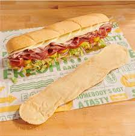
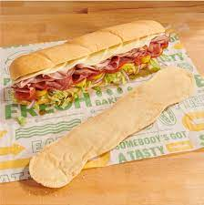

Welcome!
Remember to use the navigation bar above to go anywhere on the site. Also, clicking the big COLUMBUS logo sends you back here. Trust me this is not a massive hidden scheme to market for Subway, why would you think that?
 
